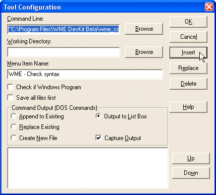
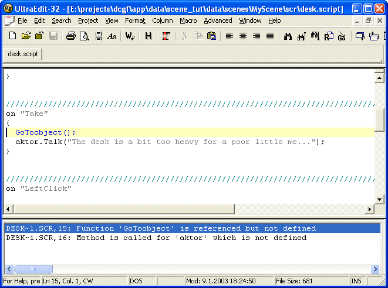

It is useful to be able to check the syntactical correctness of the script you are writing. Most programmer’s editors allow you to execute an external tool on the edited file and to capture their output. WME Development Kit includes a standalone utility for this particular purpose. Its name is “wme_comp.exe” and it’s a command-line compiler for WME scripts.
The usage is following:
wme_comp.exe -script filename [-project filename] [-output folder]
(the -project and -output parameters are optional)
All you have to do is to plug this utility to your favorite text editor to be able to run in on your scripts (perhaps using a hotkey).
In UltraEdit, you can do it this way:
1) Go to the “Advanced” menu and select the “Tool Configuration…” item."C:\Program Files\WME DevKit\wme_comp.exe" -project "C:\Program Files\WME DevKit\wme_demo\wme_demo.wpr" -script "%F"(Note: This is just an example, you must specify your project’s .wpr file path and also the Program Files\… path may be different if you selected another folder during the WME DevKit installation) 3) You can leave the “Working Directory” field empty.

Now you can run the “Check syntax” command on the scripts. If there is a syntax error, UltraEdit will show it in the output box. You can jump directly to the line containing the error by double-clicking the error in the output box.
